Airs Asbestos Removal Ltd are pleased to be able to offer our clients The Farrow System method of cleaning. From a wagon chassis to a listed building - not asbestos removal but requiring the same specialist attention to detail.
The Farrow System® is a cost effective, environmentally safe surface cleaning method which quickly removes coatings, oxidation and graffiti from most surfaces without damaging them. An incredibly versatile blasting method, our state of the art equipment can be used for concrete, epoxy coating removal, auto restoration, steel surface preparation, brick, stone and stucco and many other uses – it is totally mobile and self contained.
The Farrow System is the original wet abrasive blasting solution on which all other systems are based. Slurry blasting, wet abrasive cleaning or dustless blasting are all interchangeable but there it is only the patented Farrow System which adds heat.
The Farrow System is a unique low-pressure cleaning solution using environmentally friendly media. By introducing heat to the process, the system achieves maximum performance at minimum pressure, cleaning any surface without damaging it and resulting in a more even and consistent blast pattern during the cleaning process.
The gentle and low pressure nature of wet abrasive blasting combined with the Farrow System’s addition of heat of heat added to the mixture makes it an ideal solution for all applications including industrial, marine, graffiti and rust removal and of course, historical restorations and artifacts which may be damaged by other aggressive chemical and high pressure solutions.
What surfaces can the system clean?
The list includes, but is not limited to sandstone, marble, stainless steel, limestone, ceramics, fibreglass, brick, terracotta, plastic, masonry, aluminium, wood, concrete, brass, paper, granite, mild steel and much more.
What materials can it remove?
Again, the list is endless but includes marine foul, varnish, black tar, rust, biological contaminants, lead paint, oxdiations, iron salts, grime, scale, graffiti, soot, chewing gum, and much More.
Where is the system used?
Boat marinas and naval dockyards, armed forces, commercial sector, national Transport, local authorities and councils, highways departments, railways, waterways, heritage trusts, stately homes, housing associations, historic restoration and private sector. The Farrow System® quickly removes protective coatings, and graffiti from surfaces without damaging them. It is fully adjustable and so can remove tough industrial coatings as well as gently clean fragile historic artefacts. The Farrow System® uses environmentally friendly media - no harmful chemicals are used.
The Farrow System® quickly removes protective coatings, and graffiti from surfaces without damaging them. It is fully adjustable and so can remove tough industrial coatings as well as gently clean fragile historic artefacts. The Farrow System® uses environmentally friendly media - no harmful chemicals are used.
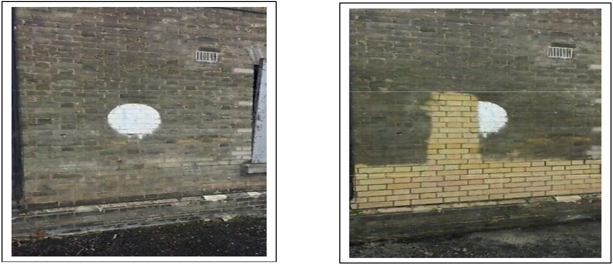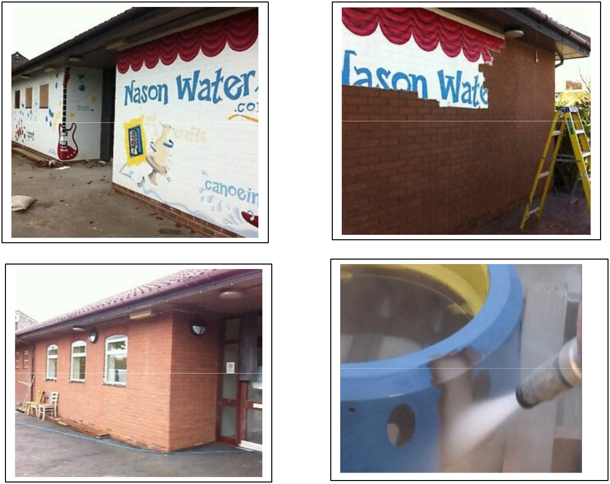 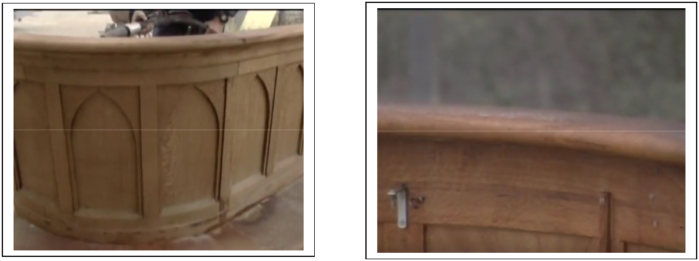
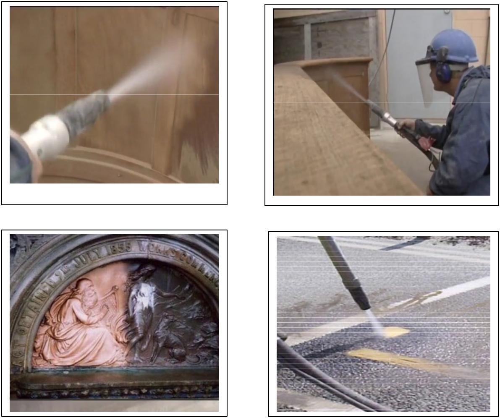 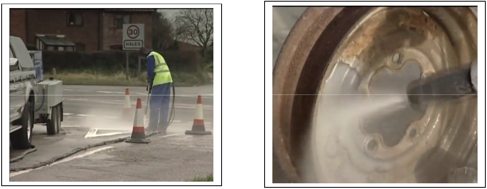
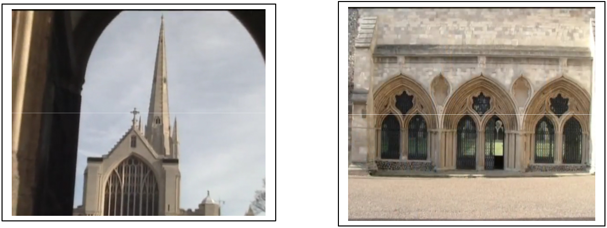
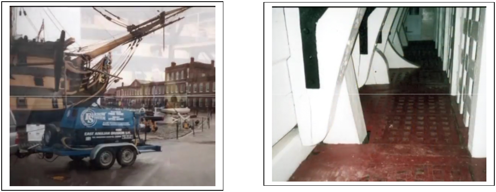
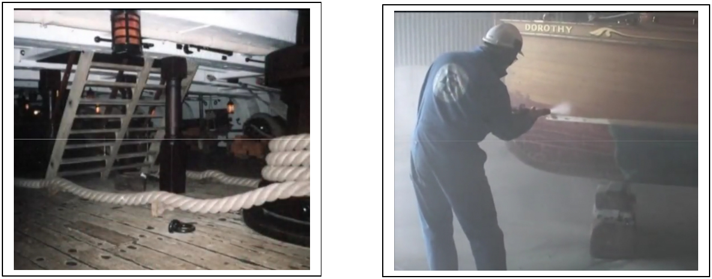


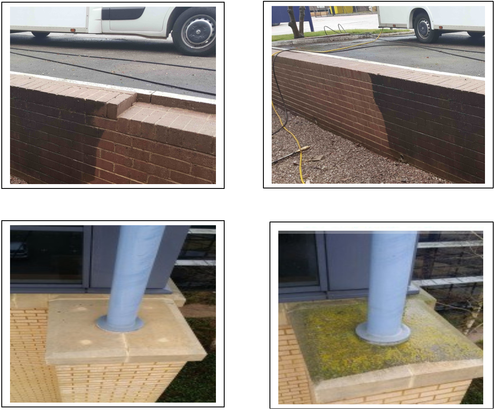 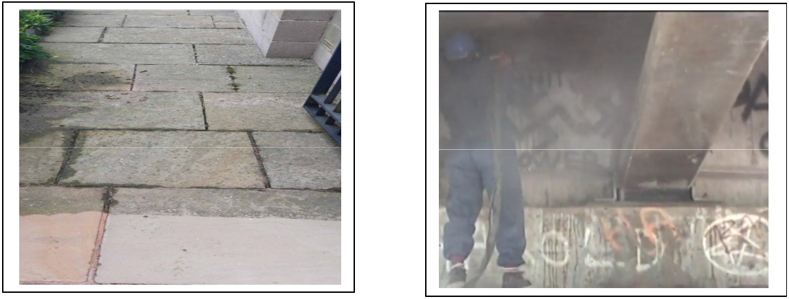
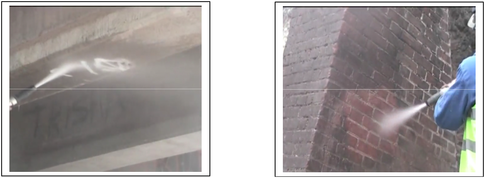